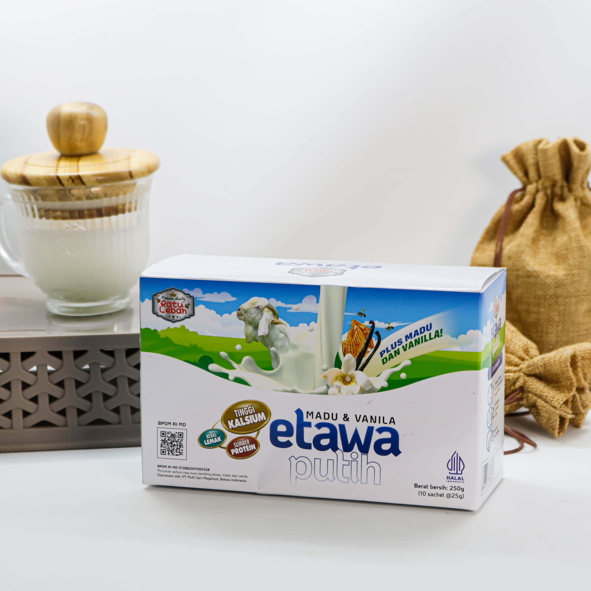
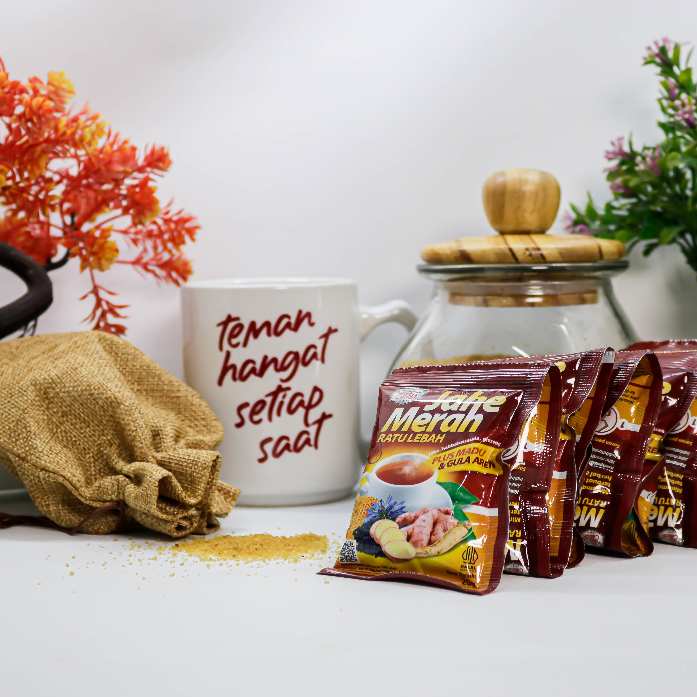

Propolis mengandung senyawa antibakteri dan antioksidan yang membantu memperkuat daya tahan tubuh.
Madu & Herbal: Rahasia Sehat dari Alam Indonesia
5 November 2025 • Tim Ratu Lebah
Artikel Pilihan Hari Ini
Ramuan turun-temurun yang masih efektif menjaga imun dan kebugaran tubuh di era modern.
Lingkungan lebah & jenis bunga memengaruhi komposisi nutrisi madu hutan alami.
Jahe merah kaya gingerol yang membantu melancarkan sirkulasi darah dan mengurangi nyeri otot.
Pastikan produk memiliki izin BPOM, label jelas, dan bahan alami terpercaya.
Ketiganya adalah hasil lebah dengan manfaat berbeda untuk imunitas, energi, dan kecantikan.
Tanaman obat asli Indonesia telah terbukti berkhasiat untuk menjaga daya tahan dan vitalitas.
Propolis kini banyak digunakan dalam penelitian medis untuk antibakteri dan antivirus alami.
Royal Jelly mengandung protein, vitamin B kompleks, dan hormon alami untuk menjaga energi.
Campuran madu dengan herbal tertentu membantu mengeluarkan racun tubuh secara alami.
Topik Populer
Sejarah Madu
Menelusuri perjalanan madu dari zaman kuno hingga modern
Fakta Madu: Keajaiban Alami dari Lebah
Menjelajahi fakta menarik tentang madu, nutrisi, dan manfaat kesehatannya
Artikel Populer
Produk Rekomendasi

Susu Etawa Vanilla Ratu Lebah
Lihat Detail →

Jahe Merah Ratu Lebah
Lihat Detail →Artikel Terkait
Khasiat Madu untuk Kesehatan
Cairan emas dari alam yang menyimpan sejuta manfaat
Kekuatan Alam Daun Sirih & Madu
Manfaat herbal dari kombinasi sirih dan madu
Manfaat Utama Madu Hitam
Kaya antioksidan untuk kesehatan optimal